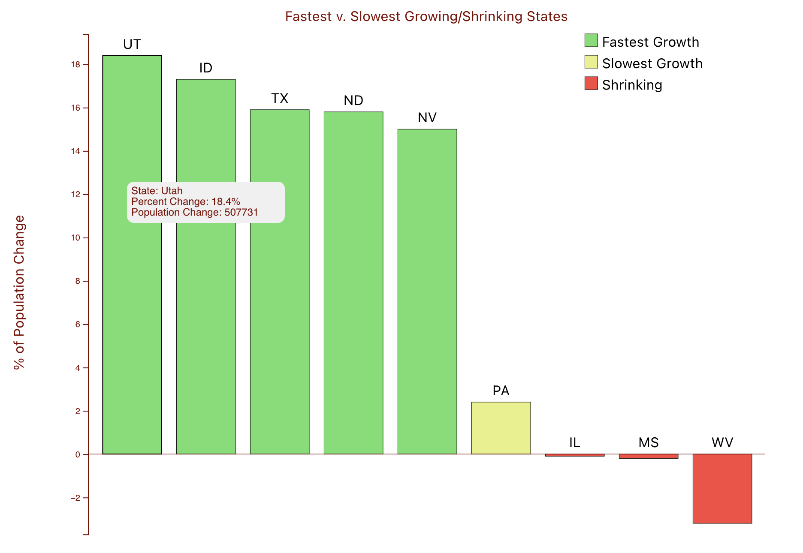

Reflections on the final project
These reflections center on my experience developing my final project for this class, Visualizating Utah's Population Growth.
Design considerations
Clarity & simplicity
Graph types we didn't cover in class
Color choice
Major challenge
Wrangling my own curiousity about learning the ins-and-outs of D3/Javascript was the biggest challenge in completing my final project.
Data wrangling
When I began my final project for the class, I ancipated some data transformation needs. Having worked in data engineering previously, I've used Python and SQL to process raw data into aggregate tables an untold number of times. Outside of enriching the US migration dataset with regions and divisions specified by the US Census Board, I decided to perform as many data transformations as possible using Javascript. This decision resulted in a few knock-on effects to how the visualizations were executed under time constraints.
Rabbit holes
The seduction of learning sometimes overrides the determination to stick to a brief and project goals for someone like me. My first week of work included enough data processing in Javascript that my only output on the page was a simple bar chart showing the three different types of migration to Utah between 2010 and 2019. Given that our class focused on data visualization, I felt the need to curb my original ambition.
Simplifying data to focus on visualization
In the final Javascript file for my project, you will still see evidence of me striving simplify the data to allow for visualization to be at the forefront of my attention. The best existing example of this intention is the creation of an array of objects used to build my first visualization:
const statesData = [
{ state: 'Utah', abbr: 'UT', percentChange: 18.4, popChange: 507731, changeCat: 'fastest' },
{ state: 'Idaho', abbr: 'ID', percentChange: 17.3, popChange: 271524, changeCat: 'fastest' },
{ state: 'Texas', abbr: 'TX', percentChange: 15.9, popChange: 3999444, changeCat: 'fastest' },
{ state: 'North Dakota', abbr: 'ND', percentChange: 15.8, popChange: 106503, changeCat: 'fastest' },
{ state: 'Neveda', abbr: 'NV', percentChange: 15, popChange: 404063, changeCat: 'fastest' },
{ state: 'Pennsylvania', abbr: 'PA', percentChange: 2.4, popChange: 300321, changeCat: 'slowest' },
{ state: 'Illinois', abbr: 'IL', percentChange: -0.1, popChange: -19041, changeCat: 'shrinking' },
{ state: 'Mississippi', abbr: 'MS', percentChange: -0.2, popChange: -1816, changeCat: 'shrinking' },
{ state: 'West Virginia', abbr: 'WV', percentChange: -3.2, popChange: -68207, changeCat: 'shrinking' },
]

I used the Numeric and Percentage Changing in Resident Population data and hardcoded it into an array of objects to avoid data processing. This strategy definitely simplified data processing, but it ignored the basic competency of reading data into our page using D3, a competency that I wanted to demonstrate.
Off the wagon *again*
Ultimately, I couldn't help myself, and as I ingested the rawer census data (link) I started to process the data in Javascript again. The code below is likely the most succinct example of me exploring vanilla JS to aggregate.
const stateGroupedData = utahRawData.reduce((accumulator, item) => {
if (accumulator[item.from]) {
accumulator[item.from].number_of_people += item.number_of_people
} else {
accumulator[item.from] = {
number_of_people: item.number_of_people,
region: item.from_region,
division: item.from_division
}
}
return accumulator
}, {})
From a pure learning perspective, working on this anonomous function was deeply satisfying. The concepts I learned and used are:
-
Callback or higher order functions, in this case
reduce(), which take other functions as an argument -
How
reduce()WORKS - An accumulator pattern using Javascript, which I reused again while processing the data for this project
The most useful thing I learned
WE CLIMBED AND WE CLIMBED, OH HOW WE CLIMBED, MY, HOW WE CLIMBED OVER THE STARS TO THE TOP OF TIGER MOUNTAIN, FORCING THE LINES THROUGH THE SNOW
How critiques helped shape my project
Mobile view ports, odd spacing, not enough data collection to substantial or falisble your claims.
Hasta Manana, Monsieur
WERE THE ONLY WORDS THAT I KNEW FOR SURE
blah
It's easy to get lost when the order of magnitude is (almost) increased by 1.